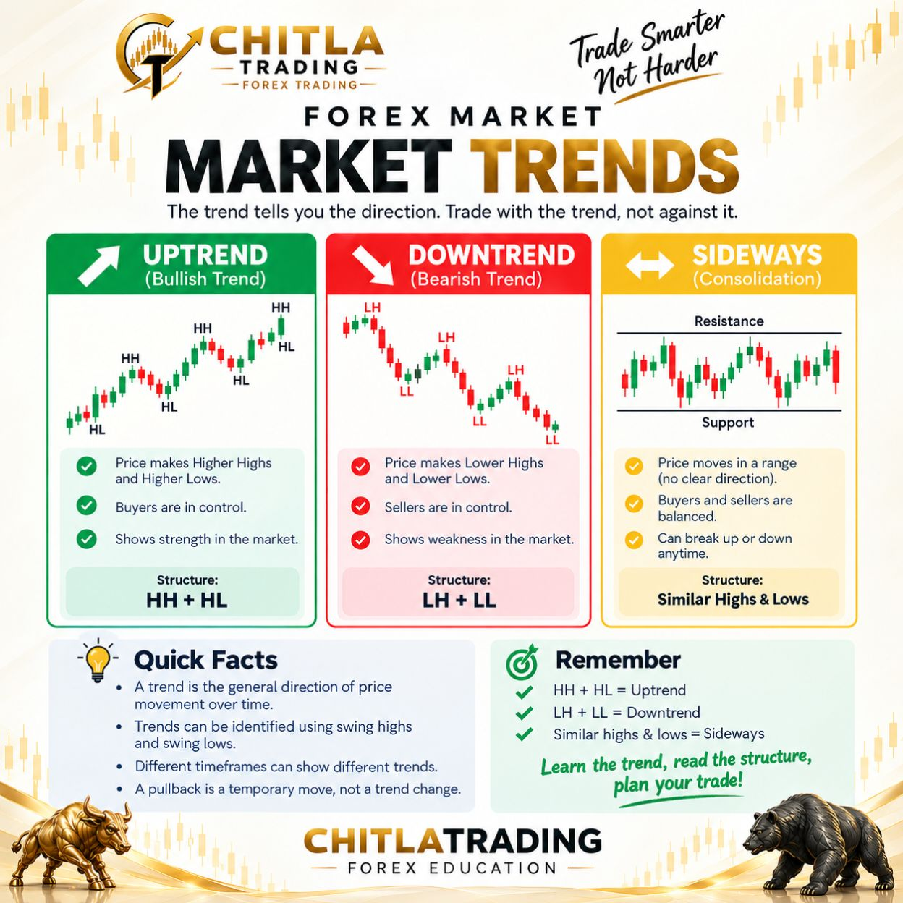
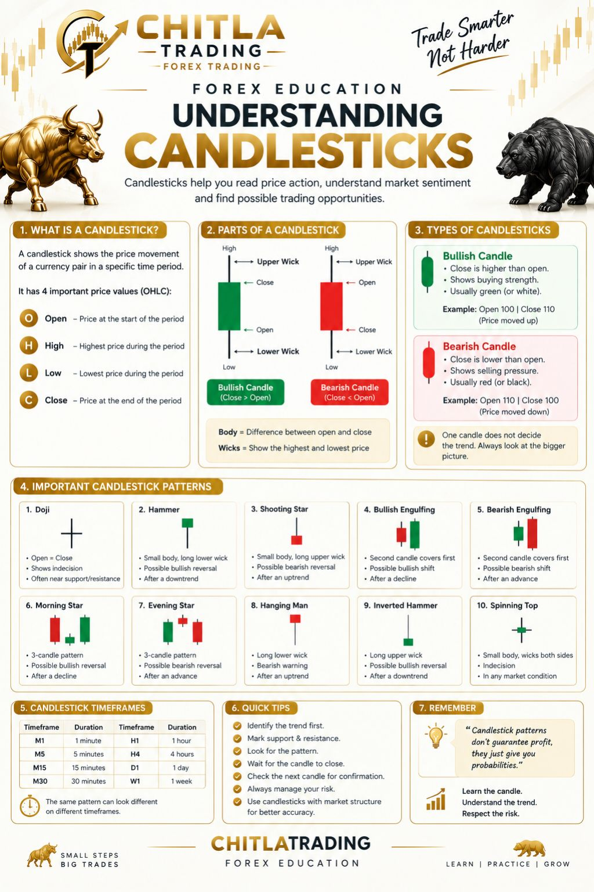
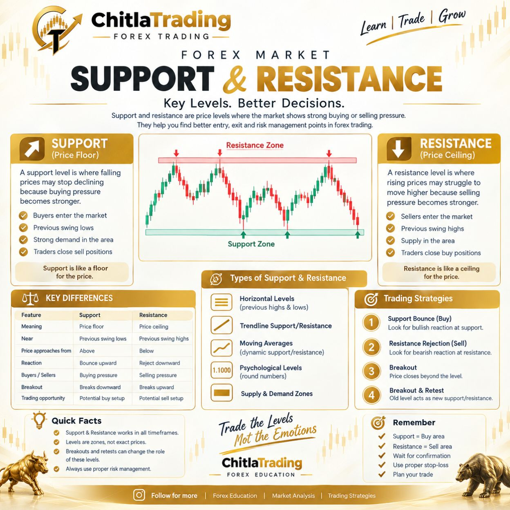
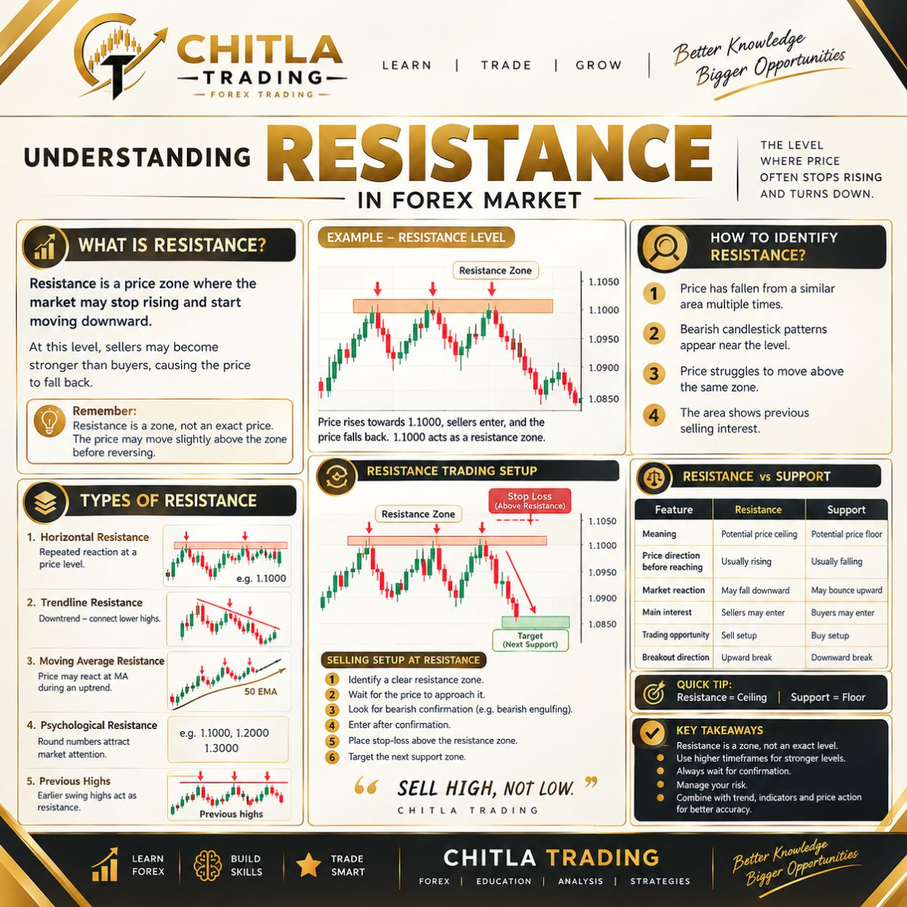
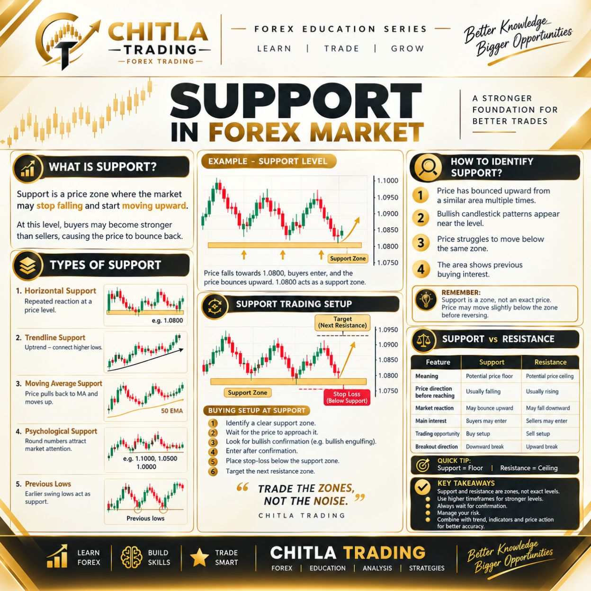
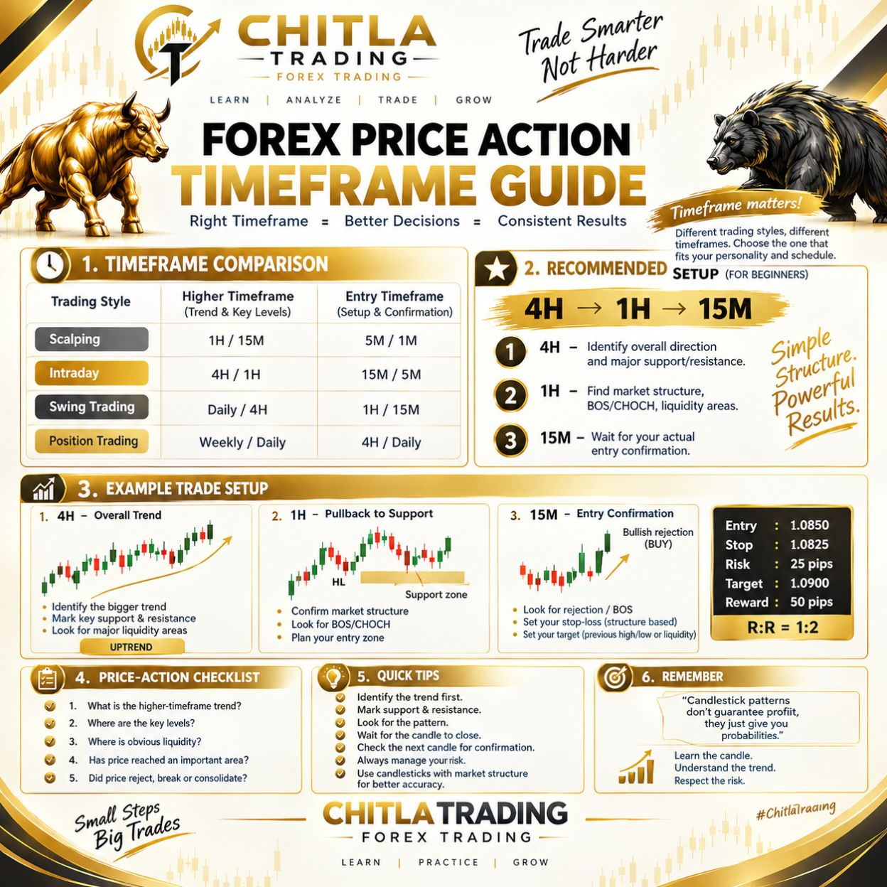

Market Trends
Learn to identify uptrends, downtrends and sideways market conditions.
Understand Price Action
Study market structure, recognise important price levels and develop a more disciplined approach to analysis.
Market analysis is the process of studying price behaviour, trends and important levels before making a trading decision. No method predicts every market movement. Analysis should always be combined with risk management.

Learn to identify uptrends, downtrends and sideways market conditions.

Understand candle bodies, wicks and how price behaviour can provide market context.

Study price zones where buying or selling pressure may emerge.

Learn how traders identify potential selling-pressure zones and possible breakouts.

Understand potential buying-pressure zones and why support levels can fail.

Compare higher and lower timeframes to understand the broader market context.
A clear process matters more than a confident prediction.
Before entering a trade, consider the market context, your entry conditions, invalidation level, potential loss and position size. Record your decisions and review them regularly.